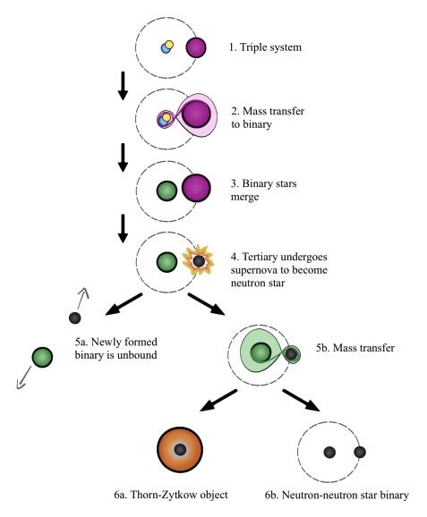
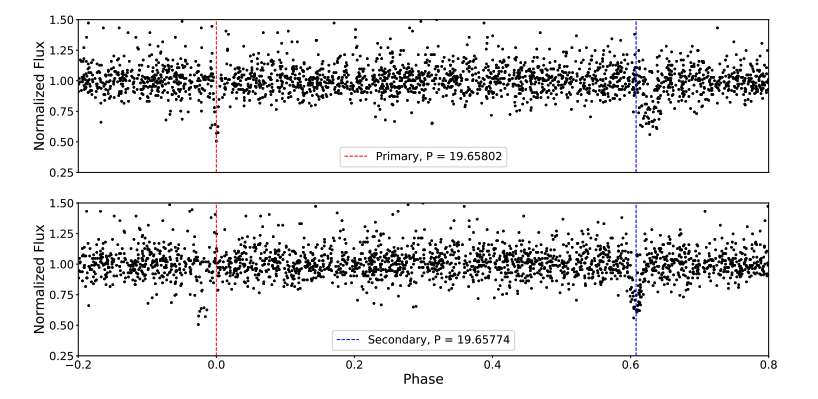

Welcome TESS followers! This week we are looking at three papers from the archive.
Planet Hunters TESS IV: A massive, compact hierarchical triple star system TIC 470710327 (Eisner et. al., 2022) :
In this paper the authors report on the discovery of a massive, compact, hierarchical triple system known as TIC 470710327. This system was originally identified by citizen scientists as part of the Planet Hunters project which asks the community to search for transiting events in TESS data. After identification it was then observed by the HERMES spectrograph and these data combined with eclipse timing variations confirmed that the system consists of three OB stars, with a compact 1.1 day eclipsing binary and a non-eclipsing tertiary with a 52.04 day orbit.
Using radial velocity measurements and the eclipsing timing variations dynamical modeling was performed which indicated a rare configuration where the tertiary star is more massive than the combined mass of the inner binary. The tertiary star is thought to be an O9.5 -B0.5V star with a mass between 14-17 M⊙, and the inner binary is thought to be between 10.9 - 13.2 M⊙. It is likely therefore that the system will undergo multiple stages of mass transfer in the future and may end up as a double neutron star gravitational wave progenitor or an exotic Thorne-Zytkow object.
97 Eclipsing Quadruple Star Candidates Discovered in TESS Full Frame Images (Kostov et. al., 2022) :
This paper presents a catalog of 97 carefully vetted quadruple star systems. These systems were identified in the TESS full frame images from Sectors 1 through 42 via machine learning techniques and visual examination, with major contributions from a group of citizen scientists.
Each target has two sets of eclipses with two different periods, both of which pass photocenter tests confirming that the eclipses are on-target.
The sample presented here nearly doubles the number of known multiply-eclipsing quadruple systems, and will aid significantly in future studies.
During the creation of the catalog the authors made several important discoveries, including finding the first sextuply-eclipsing sextuple stellar system and the first transiting circumbinary planet detected from one sector of TESS data. See this paper for more information.
Searching for white dwarf variables in TESS data (Priyatikanto, 2022) :
Crossmatching a sample of four thousand Gaia sources with apparent G-band magnitudes brighter than 17th, and trigonometric parallaxes greater than 3.33 milli-arcseconds, to TESS higher level science products and full frame images the authors of this paper were able to extract the light curves of possible white dwarf variables.
Most targets were observed in at least one sector and with a 30 minute cadence. Using a Lomb-Scargle periodogram constructed from de-trended light curves, 634 white dwarfs were found to have periodic variability. See this paper for more information about the sources identified.

Fig. 1: Taken from Eisner et. al., (2022). Possible future evolution of TIC 470710327. Relative sizes of the stars and orbits are not to scale. For simplicity, all orbits are depicted as circular. .

Fig. 2: Taken from Kostov et. al., (2022). Phase-folded DASCH data of TIC 172900988 – an eclipsing binary hosting a transiting circumbinary planet. The upper panel shows the data folded on the primary eclipse (dashed red line) and the lower panel shows the data folded on the secondary eclipse (dashed blue line). The two eclipses follow slightly different periods due to the apsidal motion of the binary caused by dynamical perturbation from the planet.